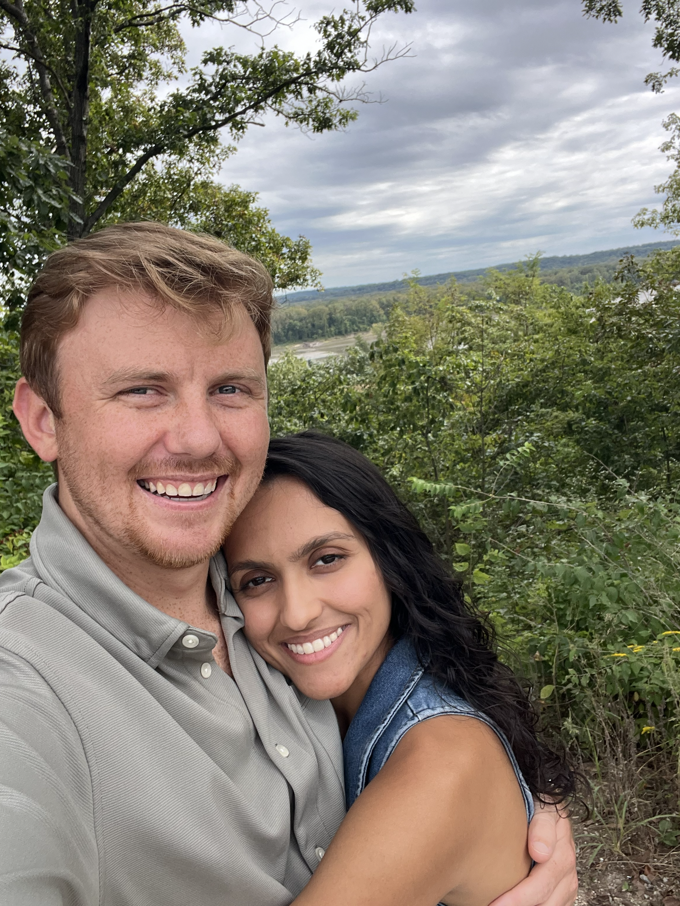
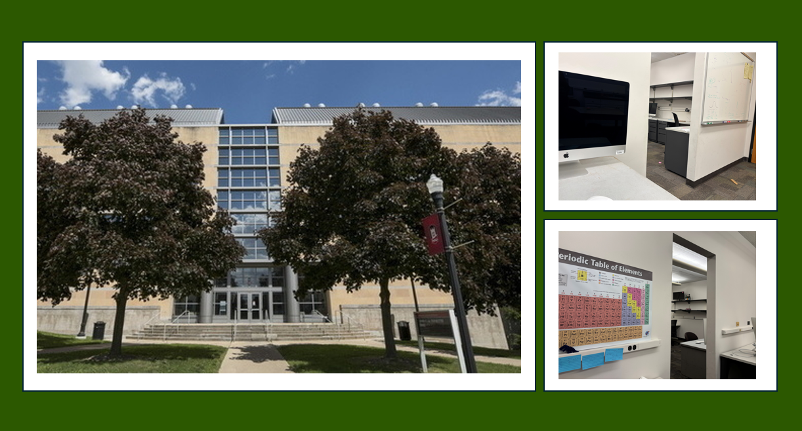
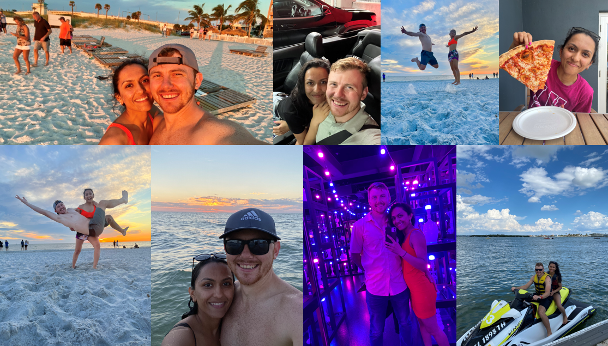
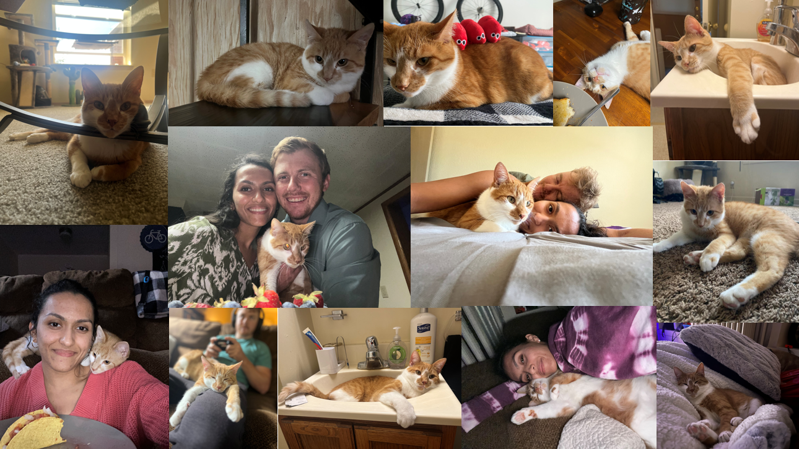
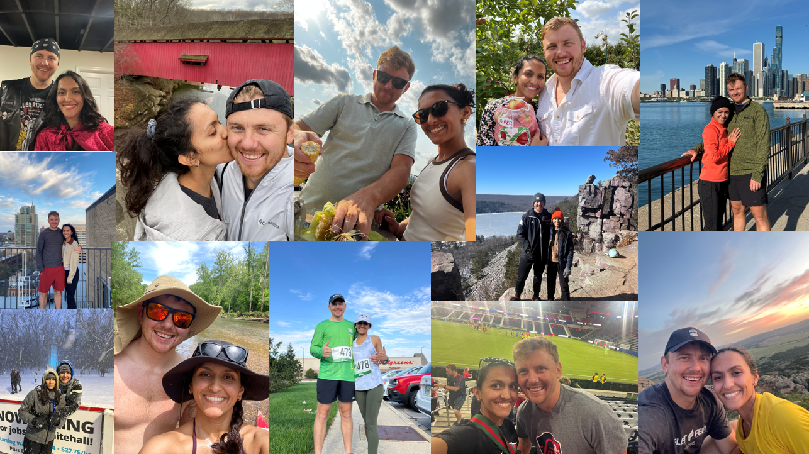

A little collection of my favorite memories with you.

Since our story began...
0Years
0Months
0Days
0Hours
0Minutes
0Seconds

How It All Started!
I can still remember back in August 2021, finding excuses to stay late at the office in La Tourette on the days when the high-spirited, hard-working,
cute Indian girl in the office next to mine would be there. Our desks just happened to be angled perfectly for us to make eye contact and
strike up conversations. We would spend hours having deep conversations, laughing about chemistry homework, taste-testing cookies, and leaving each other
little notes and pickup lines. I guess all those excuses to stay late at school ended up being pretty worthwhile! (:

Our First Adventure Together!
Our time in Florida was one of my favorite memories of us. Although we had were already dealing with everything going on with your parents at the
time, it was before the stress of medical school applications and all the uncertainty that came with it. It was just you and me, driving around
the Sunshine State in a convertible without a care in the world. We spent our days playing frisbee in the ocean, spotting dolphins on the jet ski,
eating pizza slices bigger than our heads, and finding enormous alligators on our hikes. Somewhere during that trip, I realized just how much I
loved you and that I would be happy spending all my days with you. Seeing you so genuinely happy, laughing and smiling without a care in the world,
made me the happiest man alive.

And then there were three...
Late March 2023, we welcomed Noodle into our lives. You seemed a little hesitant about the idea at first, but it turns out his cuddly, chill, yet
zoomy personality was a perfect fit for us. We have experienced just about every emotion with him: scared when we thought we lost him in Rochelle,
angry when he started munching on your plants, worried when he threw up in my car, and in awe when he snuggles in our laps or eats dinner with us.
I would say we picked a good one(:

The Little Things
Throughout our five years together, we haven't always had the money for expensive vacations, but we have always managed to make the most of the little
things. Late-night walks, our "book clubs," brewery and winery dates, hiking local trails, trying new Hello Fresh recipes together, watching movies
on the couch, or traveling around the Midwest for a race. I genuinely love all of it. Once school is over and we're in a better place financially,
we will have more opportunities to explore the world and experience different cultures together. But for now, I am more than happy focusing on these
little things with you!
Places We've Been
Click a marker to see a memory from that place.
A letter for you
Devanshi,
Happy fifth anniversary! I can't believe how quickly time has flown by. We have been through so much together, and yet here we are, still going strong.
As I have tried to show throughout this webpage, I honestly just love spending time with you. By now, you have probably realized that I am far from perfect:
I don't talk very much on car rides, I throw your clean clothes in the hamper, I don't completely dry my back after showers, I don't use sunscreen, and
I "rage bait" because apparently that's my love language (just to name a few). But I would like to think there are plenty of good qualities that make up for those things!
I have loved watching you grow and pursue your interests over the years. Whether it is running a half marathon, growing a forest in your studio apartment, reading books
twice as fast as I do, spending time with the girls, or going on hikes and walks through Forest Park, I love seeing you find happiness in the things you enjoy. Beyond that,
I have watched you grow into such a strong, independent woman. You are not afraid to speak your mind or stand up for what you believe in. You continue to take on medical
school one day at a time, all while dealing with the stress of everything going on with your parents. I am genuinely proud of you and your ability to keep pushing forward
and give everything your best.
We often joke about how our interests don't always align, but honestly, that is something I have always wanted. I wanted to be with someone from a different culture,
someone who would introduce me to new perspectives and experiences and challenge me to appreciate (or at least tolerate) our differences. And even when those differences
turn into the occasional verbal disagreement, I am glad we can always support each other and be ourselves.